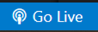
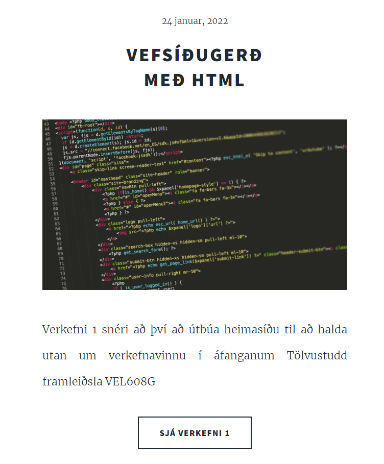

Vefsíðugerð
með HTML
Undirbúningur
Við upphaf verkefnisins hafði ég aldrei áður unnið með html svo fyrsta skrefið var að horfa á eftirfarandi myndbönd sem Hafliði birti.
Vinnu umhverfi
Því næst bjó ég til Github aðgang og hlóð niður Brackets og Git. Eftir smá ráðfæringar við aðila sem hafði áður unnið með html ákvað ég að hlaða niður Visual Studio code og nota það í stað Brackets. Það sem heillaði mig sérstaklega við Visual Studio code er hversu auðvelt er að prufukeyra síðuna með því að smella á “go live” hnappinn niðri í hægra horninu. Þegar síðan er opin í vafra á local svæði á tölvunni þá er hægt að sjá breytingar jafnóðum með því að vista með skipuninni ctrl+s.
Í ljósi reynsluleysis á html ákvað ég að velja sniðmát af síðunni html5up.net. Sniðmátið sem varð fyrir valinu heitir Massively. Helsti kosturinn við Massively er að mjög greina góð “elements síða” fylgir þ.e sýnidæmi hvernig skal beita ýmsum trikksum við textagerð sem og sníða myndir og fleira. Eftir að hafa hlaðið Massively zip-skránni niður og vistað hana á viðeigandi svæði var hægt að hefjast handa.
Stilla upp heimasíðunni
Fyrsta verk eftir að hafa opnað kóðan í visual studio var að google-a sýnidæmi um hvernig best sé að vinna með þetta sniðmát leitin bar lítinn árangur og eina sem ég gat fundið var eitt myndskeið sem hljálpaði til við að stilla upp forsíðunni. Forsíðan á Massively er byggð upp eins og frétta/bloggsíða mér fannst sniðugt að nýta mér þennan eiginleika með því að nota forsíðuna í þeim tilgangi að birta hvað hefur verið á döfinni inn á heimasíðunni minni og láta þar fylgja mynd og örskýring á því. Þannig geta áhugasamir ýtt á hnapp sem flytur viðkomandi á svæðið þar sem fulla umfjöllun er að finna. Hér að neðan má sjá dæmi um tilkynningu. Þar sem hnappurinn “Sjá verkefni 1” leiðir mann síðan á síðuna sem þú ert að lesa núna.
Til að öðlast dýpri skilning á html horfði ég á youtube myndskeið, eftir það var mér ljóst að html kóðunin væri gott sem sú sama fyrir mismunandi vefsíður og aðal munurinn lægi í css. Eftir þetta myndband hafðist ég handa við að stilla upp heimasíðunni í heild sinni. Massively sniðmátið kom með þremur header flipum sem sjást á myndinni hér að neðan. Þar sem “THIS IS MASSIVELY” var sniðmát af forsíðunni og “GENERIC POST” dæmi að sniðmáti fyrir greinaskrif.
Ég breytti nafninu á forsíðu flipanum og þurfti að bæta við tveimur header flipum og gekk það snuðrulaust fyrir sig. Á myndinni hér að neðan sést hvernig kóðinn fyrir það lítur út en neðstu tveimur línunum var semsagt bætt við.
Það er hinsvegar eitt sem ég lenti í veseni með og það er að passa setja class=”active” í línuna fyrir framan html skránna sem kóðinn er í. Ég vil kenna lesblindu minni um hversu óþarflega langan tíma það tók mig að finna fram úr þessu, þar sem ég einfaldlega tók ekki eftir þessu fyrr en eftir að hafa lesið kóðann allan í bak og fyrir tvisvar til þrisvar sinnum. Þá var uppstilling síðunnar svo gott sem komin, ég ákvað að fjarlæga samskiptagátt sem sjá má á mynd hér að neðan. Það var gert einfaldlega með því að eyða út þeim kóðabút. Þessi samskipta gátt var innbyggð í Massively sniðmátið en þar sem ég hafði ekki aðgang að sjávirkri móttöku skilaboða ákvað ég að fjarlægja samskiptagáttina en hélt eftir upplýsingum um hvernig mætti komast í beint samband við mig.
Nú þegar uppbygging síðunnar var tilbúin átti bara eftir að setja inn textann og myndir. Það var gert með hjálp Elements Reference.
Hlaða heimasíðunni upp með Git bash
Git hub